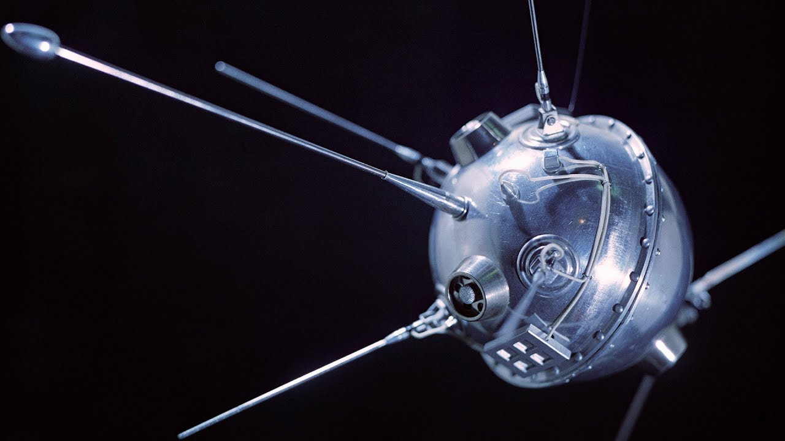
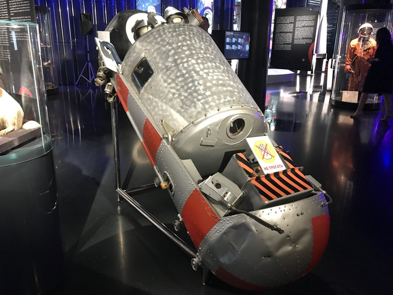
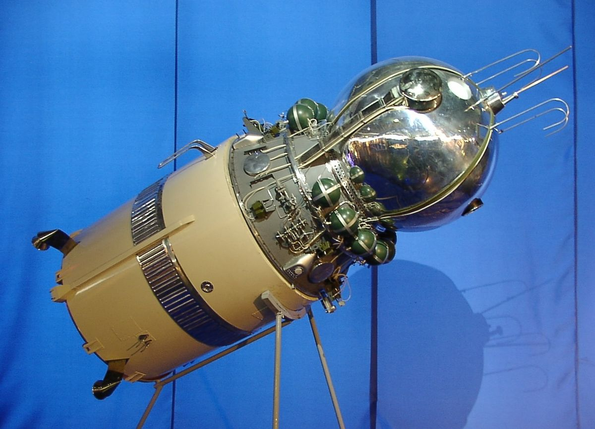
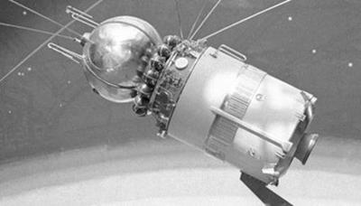
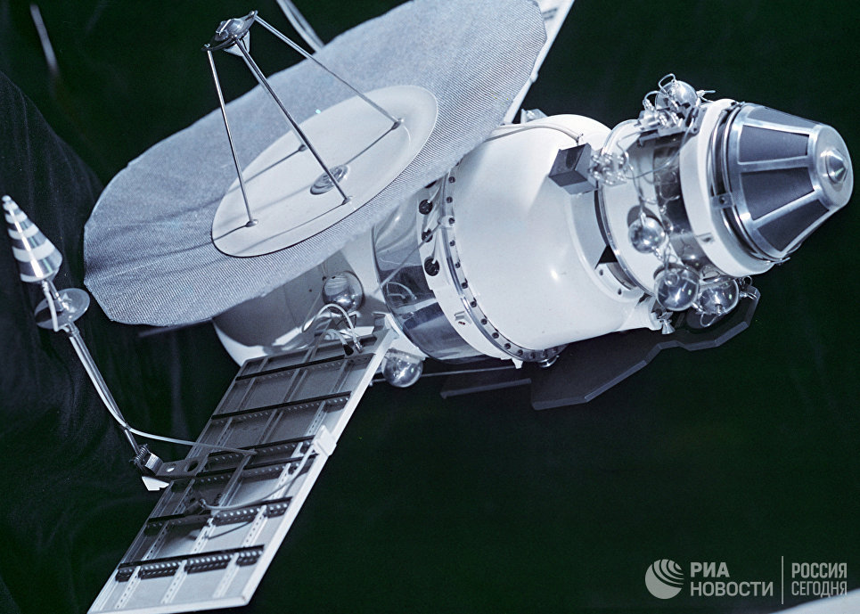
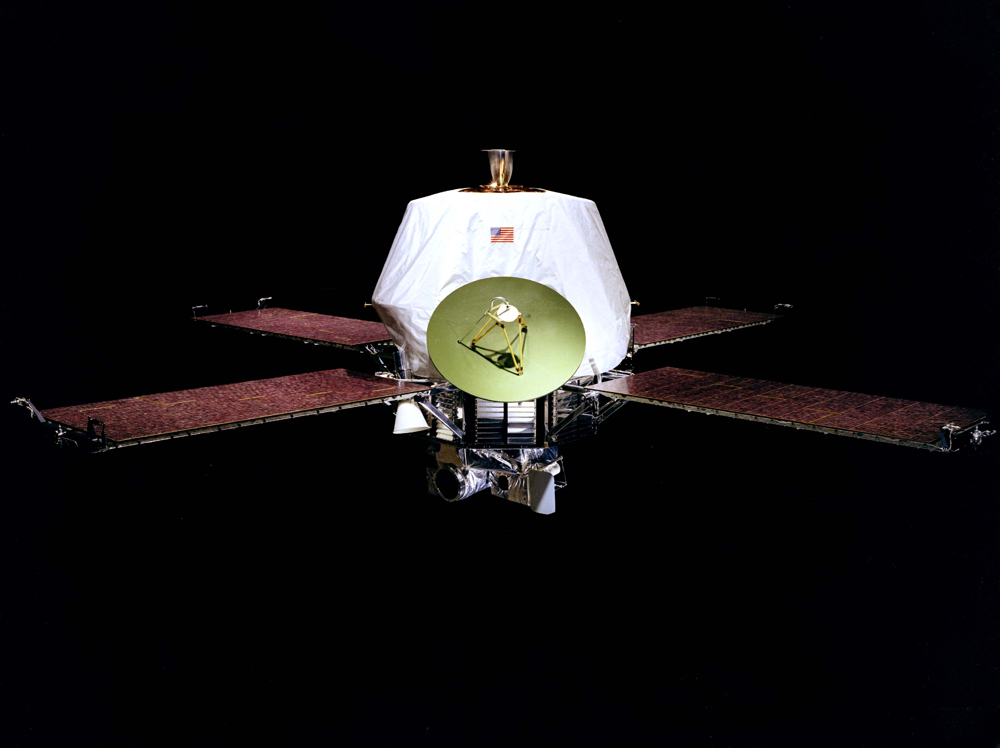

Спутник-1
«Спутник-1» — первый искусственный спутник Земли, советский космический аппарат, запущенный на орбиту 4 октября 1957 года (в течение Международного геофизического года). Кодовое обозначение спутника — «ПС-1» («Простейший Спутник-1»). Запуск был осуществлён с 5-го научно-исследовательского полигона Министерства обороны СССР «Тюра-Там» (получившего впоследствии открытое наименование космодром «Байконур») на ракете-носителе «Спутник», созданной на базе межконтинентальной баллистической ракеты «Р-7».
Над созданием искусственного спутника Земли, во главе с основоположником практической космонавтики С. П. Королёвым, работали учёные М. В. Келдыш, М. К. Тихонравов, М. С. Рязанский, О. Г. Ивановский, Н. С. Лидоренко, Г. Ю. Максимов, В. И. Лаппо, К. И. Грингауз, Б. С. Чекунов, А. В. Бухтияров и многие другие.
Корпус спутника ПС-1 состоял из двух силовых полусферических оболочек диаметром 58,0 см из алюминиево-магниевого сплава АМг-6 толщиной 2 мм со стыковочными шпангоутами, соединёнными между собой 36 шпильками М8×2,5. Перед запуском спутник был заполнен сухим газообразным азотом под давлением 1,3 атмосферы. Герметичность стыка была обеспечена прокладкой в виде кольца из вакуумной резины с прямоугольным сечением. Верхняя полуоболочка имела меньший радиус и прикрывалась полусферическим внешним экраном толщиной 1 мм для обеспечения теплоизоляции. Поверхности оболочек полировались и обрабатывались для придания им специальных оптических свойств. Внутри герметичного корпуса были размещены: блок электрохимических источников (серебряно-цинковые аккумуляторы); радиопередающее устройство ПС-1; вентилятор, включающийся от термореле при температуре выше +30 °С и выключающийся при понижении температуры до +20…23 °С; термореле и воздуховод системы терморегулирования; коммутирующее устройство бортовой электроавтоматики; датчики температуры и давления; бортовая кабельная сеть. Масса — 83,6 кг. Масса источников питания составляла около 50 кг.
На верхней полуоболочке располагались крест-накрест две уголковые вибраторные антенны, обращённые назад; каждая состояла из двух плеч-штырей длиной по 2,4 м (УКВ-антенна) и по 2,9 м (КВ-антенна), угол между плечами в паре — 70°; плечи разводились на требуемый угол пружинным механизмом после отделения от ракеты-носителя. Такая антенна обеспечивала близкое к равномерному излучение во всех направлениях, что требовалось для устойчивого радиоприёма в связи с тем, что спутник был неориентирован. На передней полуоболочке находились четыре гнезда для крепления антенн со штуцерами гермовводов и фланец заправочного клапана. На задней полуоболочке располагался блокировочный пяточный контакт, который включал автономное бортовое электропитание после отделения спутника от ракеты-носителя, а также фланец испытательного системного разъёма. Конструкция антенн была предложена доктором технических наук Г. Т. Марковым (МЭИ); работы по антеннам проводились сотрудниками лаборатории ОКБ-1 под руководством М. В. Краюшкина.
Радиопередающее устройство «Спутника-1» (радиостанция Д-200) излучало радиоволны на двух частотах: 20,005 и 40,002 МГц, поочерёдно (посылка сигнала одним передатчиком соответствовала паузе другого, переключение с периодичностью несколько десятых долей секунды осуществлялось электромеханическим реле). Для питания передатчиков, реле и вентилятора использовался набор серебряно-цинковых аккумуляторов (накальная батарея — 5 элементов СЦД-70, 140 А·ч, 7,5 В; анодная батарея — 86 элементов СЦД-18, 30 А·ч, 130 В; разработчик батарей — ВНИИ источников тока, директор Н. С. Лидоренко. Непрерывная работа передатчиков продолжалась в течение 21 дня после запуска. Эти батареи составляли около 60 % массы спутника, окружая расположенный вдоль оси передатчик конструкцией в виде восьмигранной «гайки». Более 10 кг в массе спутника приходилось на благородный металл — серебро, содержащееся в аккумуляторах. Необходимость в тяжёлых источниках питания была вызвана, во-первых, применением ламповых, а не транзисторных передатчиков (что, в свою очередь, было обосновано соображениями надёжности работы при возможной температуре на борту выше +50 °C); во-вторых, относительно большой выходной мощностью передатчиков, рассчитанных на радиолюбительский приём (для приёма сигнала профессиональными радиостанциями достаточной была бы в 100 раз меньшая мощность передатчиков, около 10 мВт). Энергопотребление каждого из двух передатчиков составляло около 7 Вт, выходная мощность — 1 Вт. Радиостанция была разработана в НИИ-885[К 2] Госкомитета по радиоэлектронике по заказу ОКБ-1 МОП. Разработка была проведена лабораторией № 12 НИИ-885 в январе-марте 1957 года, ведущим разработчиком радиостанции стал начальник лаборатории № 12 В. И. Лаппо. Выбор основных параметров радиостанции на основе прогнозируемого распространения радиоволн в ионосфере выполнен В. И. Лаппо и начальником лаборатории № 144 (Лаборатория распространения радиоволн) НИИ-885 К. И. Грингаузом. Прогноз был сделан на основе экспериментов, проводимых с помощью полётов на самолёте
Дата запуска «Спутника-1» является началом космической эры человечества, а в России ежегодно отмечается как памятный день Космических войск. В честь первого искусственного спутника Земли названа равнина на поверхности Плутона (название официально утверждено Международным астрономическим союзом 8 августа 2017 года)

Луна-1
«Луна-1» — советская автоматическая межпланетная станция (АМС) для изучения Луны и космического пространства. Первый в мире космический аппарат, достигший второй космической скорости, преодолевший притяжение Земли и ставший искусственным спутником Солнца.
2 января 1959 осуществлён пуск ракеты-носителя «Восток-Л», которая вывела на траекторию полёта к Луне АМС «Луна-1». Это была траектория сближения, без использования старта с орбиты:201. В массовой советской печати того времени эта АМС называлась «первая советская космическая ракета». Станция также имела названия «Луна-1Д» и «Мечта». 4 января «Луна-1» прошла на расстоянии 6000 километров от поверхности Луны и вышла на гелиоцентрическую орбиту.
Для достижения второй космической скорости ракета была снабжена третьей ступенью, с двигателем РД0105, созданным в Воронеже на предприятии «Конструкторского бюро химавтоматики» (КБХА).
В целях полёта ставилась задача достижения станцией поверхности Луны. Попадания не произошло, так как в циклограмму полёта закралась ошибка: при выдаче команды на отсечку двигателя третьей ступени (блока «Е»), которая выдавалась с Земли, не было учтено (уже довольно значительное) время прохождения сигнала от командного пункта до станции. Носитель и вся бортовая аппаратура станции отработали правильно. На выполнении бортовых экспериментов указанная наземная ошибка не сказалась. Среди выдающихся научных результатов, полученных в ходе полёта «Луны-1», можно отметить следующие:
- При помощи бортового магнитометра впервые был зарегистрирован внешний радиационный пояс Земли.
- При помощи ионных ловушек и счётчиков частиц были осуществлены первые прямые измерения параметров солнечного ветра.
- Был успешно выполнен эксперимент по созданию искусственной кометы. 3 января в 3:56:20 по московскому времени, на расстоянии в 119500 км от Земли из станции было выпущено облако паров натрия (1 кг); рассеиваясь в вакууме, облако светилось оранжевым светом в течение нескольких минут и наблюдалось с Земли как слабая звезда 6-й величины.
- Было установлено отсутствие у Луны значительного магнитного поля.
Несмотря на то, что станция в Луну не попала, АМС «Луна-1» стала первым в мире космическим аппаратом, достигшим второй космической скорости, преодолевшим притяжение Земли и ставшим искусственным спутником Солнца. Таким образом, в целом полёт можно охарактеризовать как частично успешный, рекордный для своего времени и весьма плодотворный с научной точки зрения.

Спутник-5 — пятый космический аппарат серии «Спутник», запущенный 19 августа 1960 г. с космодрома Байконур. 2-й корабль-спутник — прототип корабля «Восток», использовавшегося для первого космического полёта человека (1-й корабль-спутник — первый прототип — «Спутник-4»). 20 августа он благополучно приземлился, это первый корабль, вернувший живых существ из орбитального полёта на Землю.
На борту корабля находились:
- собаки Белка и Стрелка
- 40 мышей
- 2 крысы
- растения
Спутник вывел на орбиту живой груз — собак Белку и Стрелку, 40 мышей, 2 крысы и ряд растений. Аппарат с выжившими животными успешно вернулся на землю на следующий день. Спутник был оборудован телекамерой, снимавшей поведение собак в полёте.

Восток-3
«Восток-3» — третий пилотируемый космический корабль из серии «Восток».
Первый в мире групповой космический полёт. Одновременно с «Востоком-3» в космосе находился космический корабль «Восток-4», который пилотировал космонавт Павел Попович. В полёте поддерживалась радиосвязь между кораблями и Землёй. На Землю впервые передавались ТВ изображения космонавтов, транслировавшиеся по телевизионной сети СССР и Интервидения. В полёте космонавты освобождались от катапультируемых кресел и свободно плавали в кабине в условиях невесомости; проводились медико-биологические эксперименты. Одной из задач совместного полёта двух кораблей был военный эксперимент по программе создания перехватчика спутников, при этом «Восток-3» играл роль цели, а запущенный вслед ему «Восток-4» — перехватчика.

Восход-1
Восход-1 (ракета-носитель «Восход 11А57», КК «Восход-3КВ») трёхместный космический корабль СССР, запущен 12 октября 1964 г. с космодрома Байконур в 7:30 UTC, масса 5320 кг. Полёт длительностью 24 ч 17 мин. происходил на орбите 177,5 км (перигей), 408 км (апогей). Седьмой пилотируемый полёт советского космического корабля. Впервые в мире был совершён полёт многоместного корабля, и впервые он осуществлялся без скафандров
Космический аппарат «Восход» базировался на конструкции корабля Восток, но была добавлена резервная твердотопливная тормозная двигательная установка и ионная система ориентации. Появилась и система мягкой посадки спускаемого аппарата — перед приземлением из СА выдвигался щуп длиной около метра, и при касании его поверхности земли срабатывал двигатель мягкой посадки, гасивший скорость снижения СА до нуля, по крайней мере, вертикальную компоненту. Это позволило отказаться от катапультирования, которое было необходимо на КК «Восток» из-за сильного удара СА о землю. Отказ от катапультных кресел позволил вместить трёх членов экипажа, правда, с ужесточением требований к росту (особенно росту сидя). Но, с другой стороны, отказ от системы катапультирования исключал возможность спасения экипажа в случае аварии ракеты-носителя на первых этапах взлёта, что вносило повышенный риск.
Размещение экипажа в кораблях Восток, Восход-1 и Восход-2 Из-за конструктивно-компоновочных проблем кресла экипажа были развёрнуты на 90° по отношению к положению кресла на корабле «Восток», что делало крайне неудобным управление кораблём в ручном режиме («низ» пульта был «сбоку», и все надписи тоже были видны в вертикальном направлении). Очень сжатые сроки разработки не дали возможности устранить этот недостаток.
Поскольку СЖО исходно была рассчитана на одного человека, время работы на орбите пропорционально сокращалось, поэтому корабль «Восход» мог провести в космосе с экипажем лишь двое суток. В действительности, основная программа полёта была рассчитана на одни сутки. Космонавты просили о продлении полёта ещё на сутки, но в это время в Москве произошёл «переворот» — Хрущёв был смещён со всех постов, а новому правительству было не до программы полёта.
Со всеми переделками КК «Восход» был более, чем на тонну (20 %) тяжелее КК «Восток», и для его запуска была использована более мощная ракета с новой третьей ступенью, уже испытанной в полётах автоматических межпланетных станций. Ракета получила индекс 11К57 и собственно наименование «Восход» по имени космического корабля, хотя гораздо больше использовалась для запуска спутников фоторазведки серии «Зенит»

Венера-3
«Венера-3» — автоматическая межпланетная станция, предназначенная для исследования планеты Венера. Стала первым земным аппаратом, достигшим поверхности другой планеты[1].
Венера-3 летела в паре с запущенной на 4 дня ранее «Венерой-2». Им не удалось передать данные о самой Венере, но были получены научные данные о космическом и околопланетном пространстве в год спокойного Солнца. Большой объём траекторных измерений представил большую ценность для изучения проблем сверхдальней связи и межпланетных перелётов. Были изучены магнитные поля, космические лучи, потоки заряженных частиц малых энергий, потоки солнечной плазмы и их энергетические спектры, космические радиоизлучения и микрометеоры.
Масса аппарата — 960 кг.
Изготовитель — ОКБ-1 под руководством С. П. Королёва
Станция «Венера-3» была запущена 16 ноября 1965 года в 4 часов 19 минут московского времени с космодрома Байконур. Станция «Венера-3» состояла из орбитального отсека и спускаемого аппарата. Спускаемый аппарат представлял собой сферу диаметром 90 сантиметров. В спускаемом аппарате был помещён металлический глобус Земли диаметром 70 миллиметров, внутри которого находился вымпел с изображением герба Советского Союза. В спускаемом аппарате были также установлены научные приборы. Перед запуском он был тщательно стерилизован, чтобы предотвратить биологическое загрязнение Венеры. Был снабжён парашютом для мягкой посадки[3].
26 декабря 1965 года была проведена коррекция траектории полёта станции «Венера-3». В это время станция находилась на расстоянии около 13 миллионов километров от Земли. 1 марта 1966 года станция достигла Венеры и врезалась в её поверхность в районе от −20° до +20° по широте и от 60° до 80° восточной долготы (то есть к востоку от кратера Мид). Станция «Венера-3» стала первым космическим аппаратом, который достиг поверхности другой планеты. За время полета со станцией «Венера-3» было проведено 63 сеанса связи (26 с «Венерой-2»). Однако, система управления станции вышла из строя ещё до подлёта к Венере. Никаких данных о Венере станция не передала. За четверо суток до старта «Венеры-3», 12 ноября 1965 года, была запущена станция «Венера-2», которая имела такую же конструкцию, как и «Венера-3». Станция «Венера-2» пролетела вблизи планеты Венера (на расстоянии 24 000 км) 27 февраля 1966 года, на двое суток раньше, чем станция «Венера-3».

Маринер-9
Ма́ринер-9 (англ. Mariner 9, также известный как Mariner-I) — автоматическая межпланетная станция программы НАСА «Маринер Марс 71». Космический аппарат предназначался для проведения научных исследований Марса с орбиты искусственного спутника.
Маринер-9 стал первым искусственным спутником другой планеты.
В конце 1968 года НАСА приняло решение запустить в 1971 году две идентичные автоматические межпланетные станции «Маринер» на орбиту вокруг Марса.
Основные задачи полетов
- Широкомасштабные топографические и теплофизические исследования.
- Изучение сезонных изменений атмосферы и поверхности Марса.
- Проведение прочих долгосрочных динамических наблюдений.
Предполагалось, что продолжительность исследований с помощью двух искусственных спутников Марса составит как минимум 90 дней.
Научные задачи разделены на исследование неизменных свойств поверхности и исследование изменяющихся свойств поверхности и атмосферы. Невозможно оптимальным образом выполнить научные задачи с использованием единственной орбиты искусственного спутника Марса. Поэтому было решено использовать одну АМС (Маринер-9) для исследования неизменных свойств, а другую (Маринер-8) для изучения изменяющихся свойств, причём каждую АМС предполагалось вывести на особую орбиту.
Для исследования неизменных свойств была выбрана 12-часовая орбита, синхронная с вращением Земли. Такая орбита позволяет ежедневно дважды заполнять бортовой магнитофон информацией от телекамер и передавать эту информацию на станцию слежения в Голдстоуне на протяжении 8—9 часов в течение каждых суток. Поскольку период вращения Марса составляет 24 ч 37 мин, за каждый оборот Маринера на орбите зона обзора сдвигается на 9—10 градусов по долготе. Полный оборот по долготе будет завершен через 18—20 суток. За 90 суток трасса АМС покроет значительную часть Марса между −90 и +40 градусами широты, а телевизионная система полностью завершит съемку поверхности указанного района, причём будет получено непрерывное изображение с низкой разрешающей способностью и равномерно распределенные участки с высокой разрешающей способностью. Наклонение орбиты должно находится в диапазоне от 60 до 80 градусов. Южная полярная область оказывается в пределах видимости, а зона от −90 до +40 градусов по широте может быть заснята за 90 суток.
Для изучения изменяющихся свойств была выбрана орбита с периодом обращения 32,8 часа, равным 4/3 периода вращения Марса. Такая орбита позволяет многократно наблюдать один и тот же участок поверхности между 0 и −30 градусами широты при одинаковых условиях освещения и обзора. Такой период обеспечивает последовательный обзор поверхности Марса со сдвигом на 120 градусов по долготе. Таким образом осуществляются многократные измерения изменяющихся параметров для трёх заданных долгот. Кроме того, большая высота на некоторых участках орбиты позволяет обозревать и фотографировать почти всю планету на одном кадре широкоугольной телекамеры. Наклонение орбиты — примерно 50 градусов — обеспечивает обзор участка поверхности от 0 до −30 градусов по широте при каждом прохождении апоцентра. Высота апоцентра позволяет наблюдать южную полярную область.
Предполагалось, что будут собраны данные о химическом составе, плотности, давлении и температуре атмосферы, а также информация о составе, температуре и рельефе поверхности. Планировалось исследовать примерно 70 процентов поверхности планеты.
Научные исследования
- Телевизионные исследования с применением доработанной телевизионной системы космических аппаратов Маринер-69 (Маринер-6 и Маринер-7).
- Инфракрасные радиометрические исследования с применением инфракрасного радиометра, использованного на Маринер-69.
- Проведение прочих долгосрочных динамических наблюдений.
- Инфракрасные спектроскопические исследования с использованием модифицированного инфракрасного спектрометра первоначально разработанного для метеорологического спутника Нимбус.
- Ультрафиолетовые спектроскопические исследования с применением усовершенствованного ультрафиолетового спектрометра космических аппаратов Маринер-69.
- Исследование затмений Марсом радиосигналов Маринеров в S-диапазоне.
- Исследования в области небесной механики, аналогичные проведённым на космических аппаратах Маринер-69
